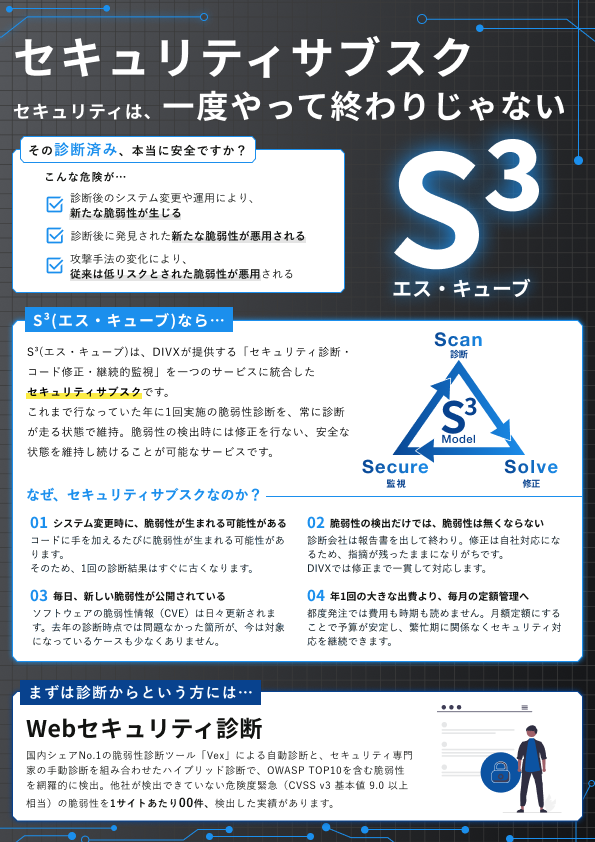
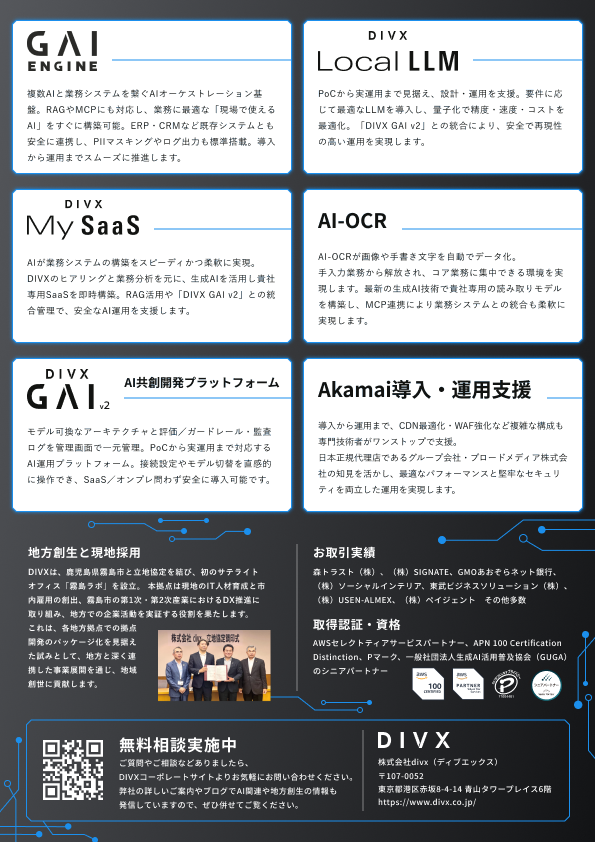
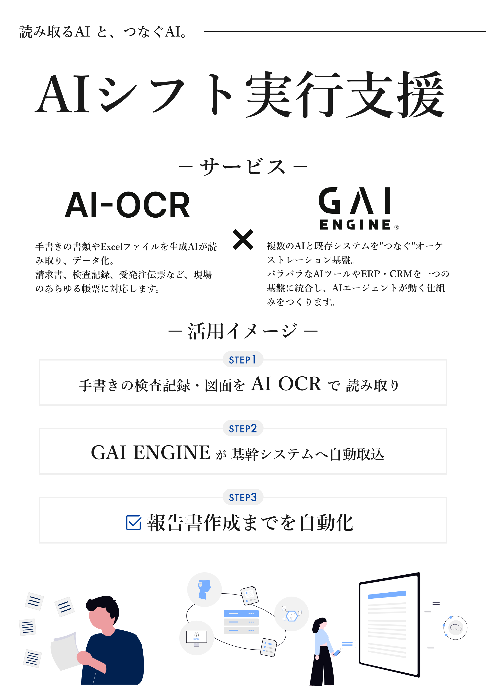
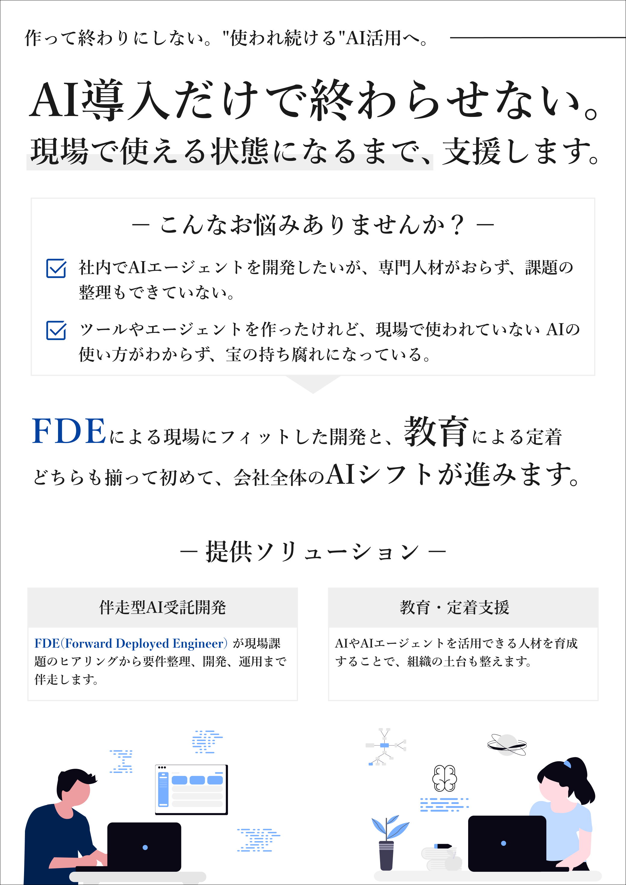

CASE STUDY — 04
BtoB向けセキュリティ展示会「Security Days」のパンフレット制作、および「EdgeTech+ West 2026」のB2ポスター制作。複数プロダクトを来場者に訴求するためのビジュアル設計に携わりました。
2026.2 — パンフレット


福岡で開催されるセキュリティ展示会「Security Days」の出展にあたり、実働約7日という短納期でパンフレットを制作する必要がありました。
新サービス「S³」を中心に訴求する方針でしたが、過去のFigmaデザインデータが利用できない状態だったため、残っていたPDFの裏面データからトレースして制作を進めました。既存パンフレットの地方創生関連コンテンツは残しつつ、表面のレイアウトを再構成してS³を新たに掲載するという構成案を提案し、承認を得て制作に入りました。
「セキュリティサブスク（診断・修正・継続監視を統合）」など抽象的になりがちなサービスを紙面で直感的に伝えること、また依頼元のサイバーパンク寄りのトーン要望とロゴレギュレーションを両立させることが求められました。
APPROACH
ダークベース＋ネオン（DIVXコーポレートブルーを軸）で、展示会テーマの「セキュリティ・信頼感」とサイバー要素のバランスを設計。
何を・どの優先度で見せるかを検討し、関係者と確認しながら掲載内容を決定。
既存資料からのトレース（PDF抽出・AI-OCRの活用）で素材を作成し、パンフレット・パネルへ展開。
2026.7 — B2ポスター


組込み・エッジテクノロジーの総合展「EdgeTech+ West 2026」の出展にあたり、ブース（W1980×D2000mm）に掲示するB2ポスター2枚を制作しました。
左右のポスターでそれぞれ異なるテーマを扱う構成で、左面は自社プロダクト「AI OCR」と「GAI ENGINE」の連携を軸にした活用提案、右面はFDE（Forward Deployed Engineer）による伴走型AI開発・教育支援サービスの訴求でした。
AI OCR（帳票読み取り）やGAI ENGINE（AIオーケストレーション基盤）など技術的なサービスを、展示会の通行者が立ち止まる数秒で直感的に理解できるよう伝えること、また2枚のポスターを並べたときにブース全体として統一感のあるビジュアルに仕上げることが求められました。
APPROACH
左面でプロダクト（AI OCR × GAI ENGINE）の具体的な活用イメージを提示し、右面で導入後の伴走支援まで見せることで、来場者の関心から相談までの流れをブース全体で設計。
「紙の請求書をAI OCRで読み取り → GAI ENGINEが会計システムへ自動連携」のように、技術をユーザーの業務フローに落とし込んだ活用シナリオで訴求。
AI NATIVE EXPO 2026で使用したFDE紹介資料をベースに、EdgeTech+の来場者層（製造・組込み系）に合わせてトーンとコピーを調整。
異なる展示会・異なるフォーマット（パンフレット / ポスター）で、それぞれの来場者像と閲覧距離に合わせたビジュアル設計に取り組みました。UIだけでなく印刷・展示という異なる制約のグラフィックに携わり、媒体ごとにトーンと情報設計を最適化する経験になりました。